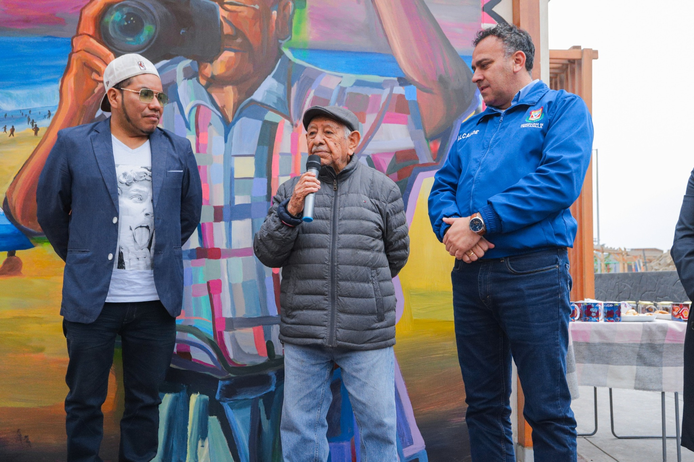
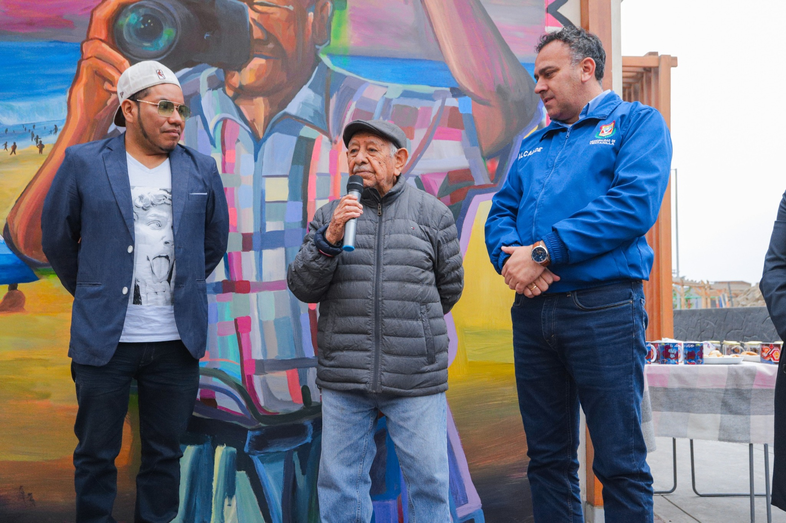

¡Bienvenido a Muralpedia!
Muralpedia es un catálogo digital dedicado al arte urbano de Lima, creado para visibilizar y preservar los murales de los barrios populares de la ciudad. Nuestro objetivo es que cualquier persona pueda descubrir, conocer y apreciar la riqueza cultural, histórica y social que estos murales representan, distinguiendo entre distintos tipos de expresiones urbanas. En Muralpedia encontrarás murales clasificados por categorías: Mural Social, Mural Político, Mural Cultural, Mural Histórico, Mural Identitario, Mural Natural, etc. Cada registro incluye información sobre su contenido, ubicación y autoría cuando se conoce, ofreciendo un panorama completo del patrimonio visual de la ciudad
Si eres artista o colectivo, puedes solicitar el registro de tus murales a través de WhatsApp o correo electrónico, cumpliendo previamente algunos lineamientos básicos: las imágenes deben ser de buena calidad y bien iluminadas, incluir un título, la autoría o colectivo responsable, la ubicación aproximada y una breve descripción de la obra. Esto garantiza que los murales se presenten de manera clara y consistente, permitiendo que tu trabajo sea conocido y preservado dentro del catálogo.
Muralpedia surge del interés por valorar el arte callejero como patrimonio cultural, fomentar la participación ciudadana y promover la reflexión sobre la historia, la identidad y la creatividad que se manifiestan en las paredes de Lima.
Para mayor información o consultas, contáctanos mediante WhatsApp o correo electrónico.
René Poma: Mural de historia y de homenaje
Artista: José Criroque
 

El artista José Criroque realizó este mural como proyecto de arte urbano por parte de la Municipalidad de Ventanilla, en homenaje a René Poma, quien es un fotógrafo legendario y vecino fundador de Ciudad Satélite, en Ventanilla.
El mural es un reconocimiento por su contribución a la comunidad local de Satélite en Ventanilla. El mural está ubicado en El Parque Integrador La Cabaña, también denominado “El refugio del arte”, Ventanilla, Callao, Perú.
René Poma es pintado junto a su cámara, lo que recuerda su legado como primer fotógrafo de Ventanilla, interesado en captar la esencia de la comunidad.
El estilo urbano representa identidad local, cultura juvenil y arte callejero. De fondo, la playa de Ventanilla retrata su belleza y riqueza natural. Los colores vivos y saturados del mural son símbolo de orgullo, vida y optimismo.
Arqueología de Cerro Culebra: Reflejo de la cultura
Artista: Manuel Arias


El artista Manuel Arias realizó un mural como proyecto de arte urbano de la Municipalidad de Ventanilla, donde retrata el mural característico de esa zona arqueológica, que fue enterrada para evitar su destrucción. Los restos arqueológicos de Cerro Culebras son famosos por un mural polícromo con patrones entrelazados de peces y serpientes, y el uso de colores vivos, de donde el muralista toma su inspiración.
Las aves pintadas con colores vibrantes destacan la biodiversidad y la fauna local, entre ellas un ave marina típica de la zona costera de Ventanilla. La imagen de la mujer con los ojos cerrados representa la conexión con la naturaleza, además de transmitir serenidad y meditación.
Este mural, ubicado en El Parque Integrador La Cabaña, también denominado “El refugio del arte”, Ventanilla, Callao, Perú, permite revalorar la historia y reafirmar la identidad.
Lexfry y la cultura: Conexión y La Naturaleza Mística
Artista: Lexfry
.jpeg)
.jpeg)
Lexfry Art es un artista callejero peruano cuya obra destaca por su capacidad de conectar la cultura visual contemporánea con las raíces simbólicas del país. Participa constantemente en actividades sociales y comunitarias, llevando el arte a espacios públicos donde combina historia, identidad y un estilo vibrante que dialoga con lo cotidiano. Sus murales suelen mezclar elementos culturales, naturaleza y figuras humanas, creando composiciones que invitan a reflexionar sobre la memoria y la tradición.
En su mural “Conexión”, Lexfry retoma la iconografía andina para representar a una mujer con sombrero de paja cargando, en su lliclla, una serie de elementos que evocan la herencia cultural: edificaciones coloniales, símbolos como el tumi y detalles que remiten a la continuidad entre pasado y presente. La figura femenina se convierte en un puente visual, portadora de una historia colectiva que sigue viva en la memoria de los pueblos andinos.
El segundo mural, sin título, expone nuevamente a una mujer andina, esta vez en diálogo visual con una joven y un colibrí. La escena sugiere la convivencia entre generaciones y la presencia de lo místico en la vida cotidiana. Aquí, Lexfry explora la fantasía natural que caracterizó la cosmovisión andina: animales que acompañan, espíritus que observan y un mundo donde lo espiritual y lo humano se entrelazan de manera íntima y armoniosa.
Pesca del día: El hombre y el mar
Artista: Huansii (Pseudónimo)

.jpeg)
.jpeg)
El artista bajo el pseudónimo de Huansii realizó este mural en el mes de octubre de 2025, con el objetivo de retratar la biodiversidad y la gente de su amada Ventanilla.
Esta obra de colores brillantes y de composición diversa crea una especie de paisaje que refleja la identidad cultural. Los peces y el ave hablan acerca de la identidad costera de Ventanilla.
Por su parte, la imagen del mototaxi, un vehículo muy común, hace referencia a la vida cotidiana urbana y funciona también como símbolo de trabajo y esfuerzo diario.
Este mural no solo exalta una identidad colectiva, sino que también permite valorar la biodiversidad.
¿Qué eres si para tenerte solo basta con mirar al cielo?: Poesía en la pared
Artista: Acción Poética

Este mural se encuentra en el Jr. Teniente Arístides del Carpio, Lima. Tuvo una última modificación en este año 2024. El trozo de espejo vuelve al mural una reflexión sobre identidad: obliga a que el espectador se vea dentro del barrio, mezclando lo imaginado con lo cotidiano. La paleta fría y el gesto de la figura evocan introspección y mirada crítica del propio entorno.
Retrato femenino en tonos azules, entre sus dedos sostiene un trozo de espejo real incrustado en la pared integrando el reflejo del barrio en la obra.
Ruido visual callejero: El arte del graffiti
Artista: Colectivo graffitero barrial


.jpeg)
Esta pared blanca se ha convertido en un lienzo vivo, un espacio donde la creatividad se desborda sin restricciones. Los grafitis se entrelazan como fragmentos de historias callejeras: frases de amor, símbolos de equipos de fútbol y pequeños dibujos que parecen susurrar la vida cotidiana del barrio. Cada trazo refleja la espontaneidad de quienes dejaron su huella anónima.
En el centro, una flor se erige como corazón de la composición, irradiando color y energía entre los trazos que la rodean. Las líneas y formas se superponen, creando un mosaico caótico pero lleno de armonía, como si cada gesto hubiera encontrado su lugar dentro del conjunto.
Aunque no hay un autor conocido, el mural respira la fuerza colectiva de la comunidad. Es un espejo de la ciudad viva, un espacio donde los vecinos, artistas o curiosos, contribuyen sin pretensiones, dejando que el arte urbano hable por todos y transforme la pared en un poema visual compartido.
Mural Político
¡Contenido en construcción! Aquí aparecerán los murales con temática política.
Volver al InicioMural Histórico
¡Contenido en construcción! Aquí aparecerán los murales con referencias históricas.
Volver al InicioMural Identitario
¡Contenido en construcción! Aquí aparecerán los murales enfocados en la identidad local.
Volver al InicioMural Abstracto
¡Contenido en construcción! Aquí aparecerán los murales de arte abstracto.
Volver al InicioMural Publicitario
¡Contenido en construcción! Aquí aparecerán los murales con fines comerciales o publicitarios.
Volver al Inicio